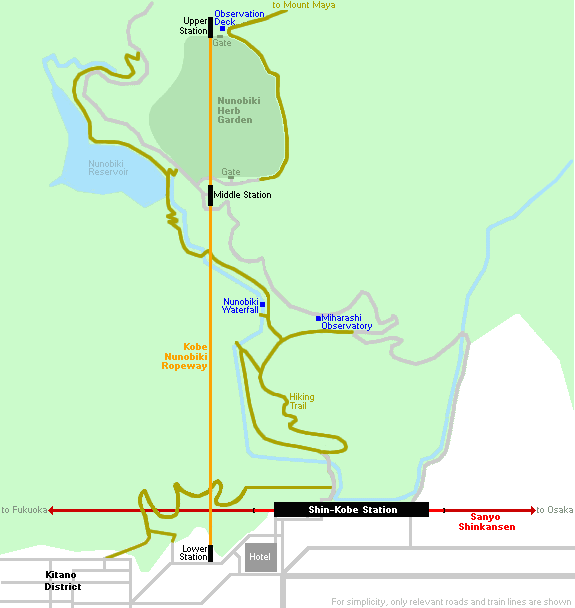
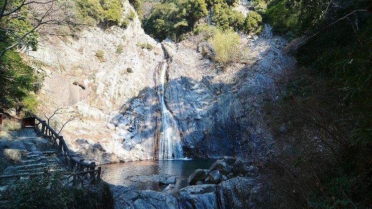
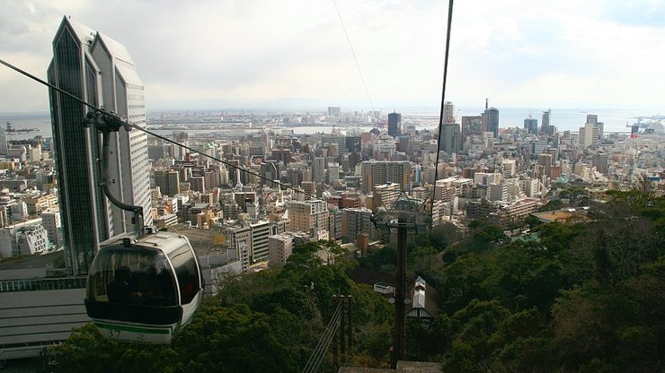

Kobe Nunobiki Ropeway
神戸布引ロープウェイ
Kobe Nunobiki Ropeway (神戸布引ロープウェイ) is one of three services that lifts tourists up the southern slopes of the Rokko mountain chain. The ropeway departs from next to Shin-Kobe Station, Kobe's shinkansen station. As it ascends, it passes by the Nunobiki Waterfall and the Nunobiki Herb Garden, giving a nice aerial view of both. The highlight of the ride lies in the observation deck located just beside the top station, which offers spectacular views of Kobe and is a popular night view spot.
An alternative way to get to the top station is via a hiking trail from Shin-Kobe Station. It is somewhat surprising that only a few steps north of the station are forests shielded from the rumbles of the city. A 15-20 minute climb through the woods takes you to the 43 meter tall Nunobiki Waterfall, whose name comes from its draped cloth-like appearance. Five minutes east from here is the Miharashi Observatory, which offers decent views of the city.
A further 20 minute scale up the mountain takes you to the middle station of Kobe Nunobiki Ropeway and the lower entrance of Nunobiki Herb Garden, one of Japan's largest herb gardens with hundreds of herb species and seasonal flowers. A glasshouse in the garden makes growing flowers and fruits such as guavas and papayas possible throughout the year.
At the upper entrance of the garden is the top station of Kobe Nunobiki Ropeway. Here, in addition to the observation deck, is a rest house with a cafe, restaurant and souvenir shop which sells many herbal and aromatic products. There is also a "Rose Symphony Garden", where visitors can enjoy viewing different varieties of roses during their blooming seasons while listening to music.
For hikers who would rather skip the garden, the top station and observation deck can be hiked to following a 30 minute trail that bypasses the garden on its east. After reaching the ropeway's top station, the same trail continues on to Mount Maya, one of the peaks of the Rokko mountain chain.
